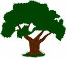

Swedish Treebank
The Swedish Treebank is a syntactically annotated corpus of Swedish, created by merging, harmonizing
and partially reannotating two existing corpora, Talbanken [1, 2]
and the Stockholm-Umeå Corpus (SUC) [3]. The Swedish Treebank
has been created through a collaboration between the Department of Linguistics and Philology at
Uppsala University and the School of Mathematics and Systems Engineering at Växjö University.
The treebank is distributed by Språkbanken at the
University of Gothenburg and is freely available for research and education but requires the user
to have a license for SUC 2.0.
Below we begin by describing the overall process of merging, harmonizing and reannotating the two source
corpora, and the way in which this process has determined properties of the synthesized treebank. We then
go on to describe the following aspects of the treebank and its annotation:
- Tokenization and sentence segmentation
- Morphological annotation (parts of speech)
- Syntactic annotation (phrase structure and grammatical functions)
- Encoding format (TIGER-XML)
We conclude with acknowledgments and references.
Synthesizing the Swedish Treebank from Talbanken and SUC
Talbanken: Talbanken is a syntactically annotated corpus, containing both written and
spoken Swedish, produced in the 1970s at the Department of Scandinavian Languages,
Lund University, by a group led by Ulf Teleman. In total, the corpus contains about
350,000 tokens, divided into 200,000 tokens of written text (professional prose and
high school essays) and 150,000 tokens of spoken language (interviews, debates, and
informal conversations). The original annotation consists
of two layers: a lexical layer, with parts of speech and morphosyntactic features,
and a syntactic layer, with a relatively flat phrase structure and grammatical
functions.
SUC: SUC is a balanced corpus of written Swedish, modeled after the Brown
Corpus and similar corpora
for English, developed at Stockholm University and at Umeå University
in a project led by Gunnel Källgren and Eva Ejerhed.
The corpus consists of 1.2 million tokens of text from a variety of
different genres, the corpus encoding follows the guidelines of the
Text Encoding Initiative (TEI), and the annotation includes lemmatization,
parts of speech, morphosyntactic features, and named entities.
In order to merge and harmonize these two corpora into the
Swedish Treebank, we have adopted the following overall strategy:
- Harmonize tokenization and sentence segmentation by making Talbanken
conform to the principles of SUC.
- Replace the lexical annotation layer in Talbanken with a morphological
annotation according to the SUC guidelines.
- Convert the syntactic annotation layer in Talbanken to a more modern format
and annotate SUC according to the (converted) Talbanken guidelines.
The overall guiding principle has been to modify SUC as little as possible (given
that it is the larger corpus and also a de facto standard for Swedish) and to make
Talbanken conform to SUC instead of the other way round. The only place where this
is not possible is for the syntactic annotation layer, which is missing in SUC.
Version 1.0 of the Swedish Treebank includes all of SUC but only the professional
prose section of Talbanken. The annotation is limited to morphology (parts of speech +
morphological features) and syntax (phrase structure + grammatical functions).
The status of harmonization and manual revision is as follows:
- Tokenization and sentence segmentation in Talbanken has been modified to fit the principles of SUC.
- Morphological annotation has been manually checked and revised in both Talbanken and SUC.
- Syntactic annotation has been partially checked in Talbanken (after automatic conversion from
the old format) but not in SUC, where the syntactic annotation has been performed automatically using
a parser trained on Talbanken after conversion from the old format.
In the following three sections, we give a brief description of the guidelines for tokenization
and sentence segmentation, morphological annotation, and syntactic annotation, respectively.
Tokenization and Sentence Segmentation
Tokenization follows the principles of SUC. Words separated by
whitespace or punctuation in the original text are considered separate tokens, as are
punctuation marks. Exception is made for abbreviations containing punctuation and/or
whitespace, which are kept together as one token with whitespace replaced by an underscore,
e.g., t.ex. and t_ex.
Sentences are segmented according to the principles of SUC, where a sentence is treated as
the longest sequence of tokens between two major delimiters, defined as one of the punctuation
marks ., ?, !, :, or combinations thereof. In addition, list items are treated
as separate sentences.
Morphological Annotation
[Sofia?]
Syntactic Annotation
The syntactic annotation of each sentence takes the form of a constituent structure, where
constituents are labeled with structural categories (phrase types),
while edges connecting constituents are labeled with functional categories
(grammatical functions) indicating the role of the lower constituent within
the higher. The set of structural categories used is a small set of conventional
phrase types, such as S for sentence/clause, NP for noun phrase, VP for verb
phrase, etc. The set of functional categories is inherited from the MAMBA
annotation scheme with a small extension for structures that were not annotated
in the original version of Talbanken.
For a detailed description of the functional categories inherited from MAMBA,
we refer to [4].
Encoding Format
Version 1.0 of the Swedish Treebank is encoded in TIGER-XML and is limited to two layers of annotation, the morphological and
syntactic layers, as described above. Future releases of the treebank are likely to use standoff annotation
and include additional annotation layers from the source treebanks. One advantage of the TIGER-XML format
is that it supports easy browsing using TIGERSearch, a GUI-based tool with advanced search facilities.
Acknowledgments
We gratefully acknowledge the work done by the original creators of Talbanken at Lund University
[1, 2, 4, 5,
6, 7, 8]
and of SUC at Stockholm University and Umeå University [3, ...],
without which the Swedish Treebank
clearly would not have existed at all. The work on synthesizing the treebank has been carried out by
Joakim Nivre, Beáta Megyesi, Sofia Gustafson-Capková, Filip Salomonsson, Bengt Dahlqvist,
and Anna Sågvall Hein at Uppsala University and by Johan Hall and Jens Nilsson at Växjö
University. Finally, we want to thank Lars Borin and his team at Språkbanken for their help in
distributing the Swedish Treebank.
References
- Einarsson, Jan. 1976. Talbankens skriftspråkskonkordans. Lund University:
Department of Scandinavian Languages.
- Einarsson, Jan. 1976. Talbankens talspråkskonkordans. Lund University:
Department of Scandinavian Languages.
- Stockholm-Umeå Corpus SUC 2.0. 2006. Stockholm University:
Department of Linguistics.
- Teleman, Ulf. 1974. Manual för grammatisk beskrivning av talad och
skriven svenska. Studentlitteratur.
- Margareta Westman. 1974. Bruksprosa. Liber.
- Nils Jörgensen. 1976. Meningsbyggnaden i talad svenska. Studentlitteratur.
- Tor G. Hultman and Margareta Westman. 1977. Gymnasistsvenska. Liber.
- Jan Einarsson. 1978. Talad och skriven svenska. Lund University:
Department of Scandinavian Languages.